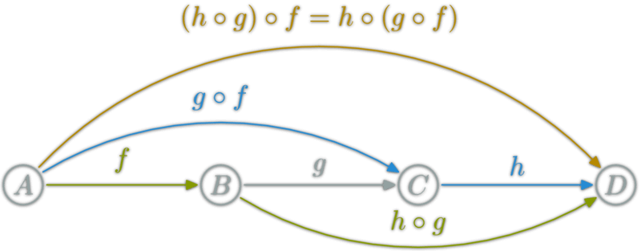

Functional Programming
三种编程范式
专注于“如何去做”，关心解决问题的步骤。
面向数据抽象，关心数据之间的映射关系。
它设定答案须符合的规则来解决问题，而非设定步骤来解决问题。
在狭义上，函数式编程意味着没有可变变量、赋值、循环和其他命令式控制结构。即，纯函数式编程语言。
在广义上，函数式编程意味着专注于函数。
用函数组合的方式来描述计算过程
函数式编程中的函数是指数学中的函数，即自变量的映射。（即一种东西和另一种东西之间的对应关系）。
函数作为一等公民，可以用于任何地方。
纯函数是这样一种函数，即相同的输入，永远会得到相同的输出，而且没有任何可观察的副作用。
所谓的副作用(Side Effect)，指的是函数内部与外部互动产生运算以外的其他结果。（比如，修改 全局变量）
纯函数满足以下条件：
高阶函数
以其他函数为参数的函数，或者返回其他函数的函数，我们称之为高阶函数
const compose = function(f, g) {
return function(x) {
return f(g(x));
}
}
函数的合成
如果一个函数需要经过多个函数，才能变成另外一个值，就可以把所有中间步骤合并成一个函数，这叫做“函数的合成”(compose)
const compose = function(f, g) {
return function(x) {
return f(g(x));
}
}
函数的合成必须满足结合律

compose(compose(h, g), f)
// 等价于
compose(h, compose(g, f))
柯里化
所谓柯里化，就是把一个多参数的函数，转化为单参数函数。
// 柯里化之前
function add(x, y) {
return x + y;
}
add(1, 2) // 3
// 柯里化之后
function addX(y) {
return function(x) {
return add(x, y);
}
}
const add2 = addX(2)
add2(1) // 3
惰性求值是指在将表达式赋值给变量时并不计算表达式的值，而在变量第一次使用时才进行计算。
函数式编程的好处
JavaScript
参考